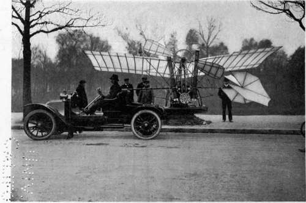
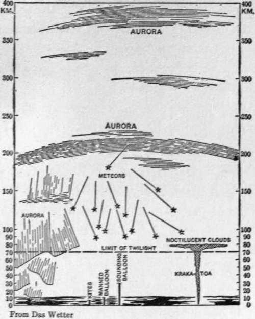

The New Science Of The Air. Part 3
Description
This section is from the book "The New Art Of Flying", by Waldemar Kaempffert. Also available from Amazon: The New Art of Flying.
The New Science Of The Air. Part 3
Sounding-balloons reach astonishing elevations and generally travel at railroad speed. Often they rise to heights of over fifteen miles and cover distances of seven and eight hundred miles at the rate of forty to eighty miles an hour. A paper balloon will reach its greatest height in about six hours; a rubber balloon, in three hours.
Fig. 45. The Santos-Dumont "Demoiselle" monoplane is the smallest flying-machine that has ever flown successfully with a man. In the later "Demoiselles" fabric propellers are supplanted by wooden screws of the usual type.
Photograph by Edwin Levick.
Provisional Selection Of Dates For International Aerological Observations
(From "Wiener Luftschiffer Zeitung" Dec. 1, 1909, with corrections subsequently announced by the International Commission for Scientific Aeronautics)
1910 | 1911 | 1912 | 1913 | |
January- | 6 | 5 | 3-5 | 3 |
February | 2-4 | 2 | 1 | 6-8 |
March | 3 | 1-3 | 7 | 6 |
April | 14 | 6 | 11-13 | 4 |
May | 11-13 | 4 | 2 | 5-10 |
June | 2 | May 3 1-June 2 | 6 | 5 |
July | 7 | 6 | 1-6 | 3 |
August | 8-13 | 3 | 1 | 6-8 |
September | 1 | 4-9 | 5 | 4 |
October | 6 | 5 | 2-4 | 2 |
November | 2-4 | 9 | 7 | 5-7 |
December | 1 | 6-8 | 5 | 4 |
In general, observations are made on the first Thursday of each month. Once a year observations on an especially extensive scale are made during six successive days; this is the so-called "International Week" and is the occasion of special aerological expeditions, in which the naval vessels of many countries participate. The month in which the International Week occurs varies from year to year. Shorter series of observations, covering three days, are made during other months — as shown in this table. The results of the international observations are collected and published by the International Commission for Scientific Aeronautics, which has its headquarters at Strass-burg. | ||||
Ascents with kites and sounding-balloons are regularly made on agreed dates by the air-exploring stations of the entire world. The dates noted in the table on page 145 were chosen for kite and balloon ascents for the years 1910 to 1913, inclusive.
As a result of many hundred flights made by kites and sounding-balloons by day and by night, in fair weather and foul, in spring and summer, in autumn and winter, over land and sea, in the tropics and within the arctic circle, we know that even in midsummer we live in a comparatively thin stratum of warm air. We know, too, that if we could transport ourselves to a height of ten miles and live in the bitter cold, thin air which would there surround us, we should find the aspect of the heavens wonderfully changed. The sky would no longer appear azure and suffused with light. By day as well as by night it would appear strangely black. Like brilliant points pricked in a sable canopy, the stars would shine both at noon and at midso fiercely in that cloudless sky of jet that the human skin would blister under its rays. So tenuous would be the air that it could not propanight. They would shine, moreover, not with the scintillation to which we are accustomed but with relentless steadiness. The sun would blaze gate sound. I could not call to my friend and be heard, even though my hand touched his.
Fig. 68. The extent of the atmosphere in a vertical direction. Heights in kilometres.
Much of this might have been guessed without the aid of the elaborate machinery that has been invented to explore the air. Much, however, has been discovered that was undreamed of in our meteorology, — among other things, that the air is stratified above us in three more or less distinct layers.
The lowermost of these layers, the layer in which we live and which extends upward for about two miles from the surface of the earth, is a region of turmoil, warm to-day and cold to-morrow. This is the region of whimsical winds, of cyclones and anti-cyclones, of cool descending currents and warm ascending currents. All our weather forecasting is at present based upon what can be learned from the general circulation of the air in this lowermost layer, the layer in which men navigate the air.
Beginning at the two-mile level that marks the end of the lowermost layer and extending upward for a distance of some five miles, we find a second stratum of air, — a stratum less capricious, and one in which the air grows steadily colder and drier with increasing height. The lowest temperature thus far recorded is 152° below the Fahrenheit freezing point. Whatever thermal irregularities there may be are caused by wide temperature changes on the surface of the earth and by the reflection of solar heat by the clouds. Here the air moves in great planetary swirls, produced by the spinning of the earth on its axis, so that the wind always blows in the same eastward direction. The greater the height the more furious is the blast of this relentless gale.
Last of all comes a layer which was discovered by Teisserenc de Bort and Dr. Richard Assmann almost simultaneously, and which is generally called the " isothermal stratum " because the temperature varies but little with altitude. The lower part of the isothermal layer shows a slight increase in temperature with increasing height. Hence this part of the isothermal layer is sometimes referred to as the " inversion layer," or region of the upper inversion.
Above the inversion layer the vertical temperature gradient is practically zero; i. e., there is little or no change of temperature with altitude. Teisserenc de Bort now calls the isothermal layer " stratosphere," and the use of this latter name is increasing.
Although the air is warmer than in the layer immediately below, the temperature lies far below the Fahrenheit zero and may be placed somewhere near 100° below the Fahrenheit freezing point in middle latitudes. Here we have a region of meteorological anomalies which have not yet been satisfactorily explained. In passing from the second to the isothermal layer, the wild blasts of wind are stilled to a breeze, the velocity decreasing from twenty-five to eighty per cent. The air no longer whirls in a planetary circle. Indeed, the wind may blow in a direction quite different from that in the second layer. Whatever may be the moisture of the air below, it is always excessively dry in the permanent inversion layer. Just where this isothermal layer begins depends on the season, the latitude, the barometric pressure, and perhaps on other factors still unknown. Just where it ends no one knows; for although sounding balloons have risen to heights of over eighteen miles, its upper limit has not yet been discovered. In summer time the isothermal layer over middle latitudes begins at a height of about seven miles above the earth. We know that the higher it lies the colder it is, that the lower it lies the warmer it is. We know, too, that there is no bodily shifting up and down of warm and cold masses of air in that mysterious region. The result is that a current ascending from the lower level spreads out when it encounters the " permanent-inversion " layer as if a solid barrier had been interposed.
Continue to: